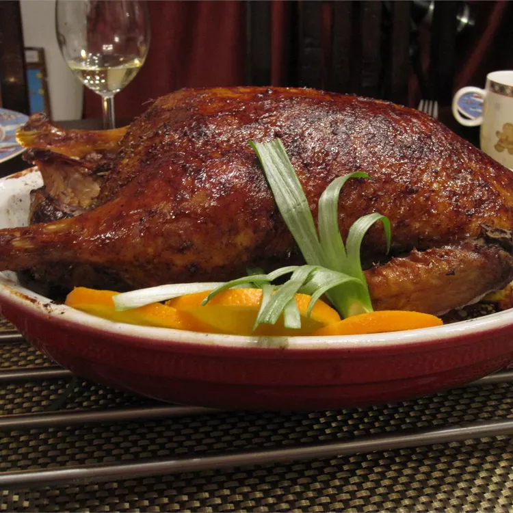

Peking Duck

Description
Peking duck is a famous Chinese dish that originated in Beijing
(formerly known as Peking), hence its name. It is a roasted duck
dish that has been a significant part of Chinese cuisine for centuries.
Peking duck is renowned for its crispy skin and succulent meat, which
is often served with thin pancakes, scallions (green onions), cucumber
slices, and hoisin sauce.
Ingredients
- 1 (4 pound) whole duck, dressed
- ½ teaspoon ground cinnamon
- ½ teaspoon ground ginger
- ¼ teaspoon ground nutmeg
- ¼ teaspoon ground white pepper
- ⅛ teaspoon ground cloves
- 3 tablespoons soy sauce, divided
- 1 tablespoon honey
- 5 green onions, divided
- ½ cup plum jam
- ¼ cup finely chopped chutney
- 1 ½ teaspoons sugar
- 1 ½ teaspoons distilled white vinegar
- 1 orange, sliced in rounds
- 1 tablespoon chopped fresh parsley, for garnish
Steps
- Rinse duck inside and out; pat dry. Cut off tail and discard.
- Mix together cinnamon, ginger, nutmeg, white pepper, and cloves in a
small bowl. Sprinkle 1 teaspoon spice mixture into cavity of duck.
Stir 1 tablespoon soy sauce into remaining spice mixture and rub
evenly over entire outside of duck. Cut 1 green onion in half and tuck
it inside cavity. Cover and refrigerate duck for at least 2 hours or
up to overnight.
- Place duck breast-side up on a rack set in a wok or pot. Steam for 1
hour, adding more water as it evaporates. Lift duck with two large
spoons to drain juices and green onion. Place duck breast-side up in
a roasting pan and prick skin all over with a fork.
- Preheat the oven to 375 degrees F (190 degrees C).
- Roast duck in the preheated oven for 30 minutes.
- Mix together remaining 2 tablespoons soy sauce and honey in a small
bowl. Brush honey mixture onto duck.
- Increase the oven temperature to 500 degrees F (260 degrees C). Roast
until skin is richly browned, about 5 minutes. Do not allow skin to
char.
- Mix together plum jam, chutney, sugar, and vinegar in a small serving
bowl. Chop remaining green onions and place them into a separate bowl.
- Place whole duck onto a serving platter and garnish with orange slices
and fresh parsley. Serve with plum sauce and chopped green onions.